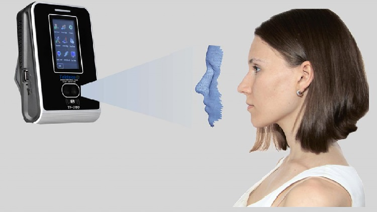

YÜZ TANIMA SİSTEMİ
Yüz tanıma sistemleri, günümüzde giderek artan bir popülerlik kazanan biyometrik güvenlik teknolojilerinden biridir. Bu sistemler, bireylerin benzersiz yüz özelliklerini kullanarak kimlik doğrulama ve tanıma işlemlerini gerçekleştirir. Bir kamera ve özel yazılım kombinasyonu aracılığıyla çalışan bu teknoloji, yüzdeki özel noktaları analiz eder ve bu verileri dijital formata dönüştürerek kaydeder. Güvenlik uygulamalarından cep telefonlarına kadar geniş bir yelpazede kullanılan yüz tanıma sistemleri, parola veya kart kullanımına göre daha hızlı ve güvenli bir kimlik doğrulama yöntemi sunar. Ancak, bu teknolojinin kullanımı bazı özel yaşam ve gizlilik endişelerini beraberinde getirerek tartışmalara neden olmuştur. Her ne kadar güvenlik açısından etkili olsa da, bu sistemlerin kullanımının denetlenmesi ve düzenlenmesi konusunda dikkatli bir yaklaşımın benimsenmesi gerekmektedir.
KOD ÖRNEĞİ
import cv2
import mediapipe as mp
import time
import random
import string
mp_draw = mp.solutions.drawing_utils
mp_hand = mp.solutions.hands
tipIds = [4, 8, 12, 16, 20]
video = cv2.VideoCapture(0)
with mp_hand.Hands(min_detection_confidence=0.5
, min_tracking_confidence=0.5) as hands:
password = ''.join(random.choices(string.ascii_
letters + string.digits, k=10))
timer_started = False
timer_start_time = 0
while True:
ret, image = video.read()
image = cv2.cvtColor(image, cv2.COLOR_BGR2RGB)
image.flags.writeable = False
results = hands.process(image)
image.flags.writeable = True
image = cv2.cvtColor(image, cv2.COLOR_RGB2BGR)
image = cv2.flip(image, 1)
lmList = []
if results.multi_hand_landmarks:
for hand_landmark in results.multi_hand_landma
rks:
myHands = results.multi_hand_landmarks[0]
lmList.extend([[id, int(lm.x * image.shape[1]),
int(lm.y * image.shape[0])] for id, lm in enum
erate(myHands.landmark)])
fingers = []
if lmList:
fingers.append(1 if lmList[tipIds[0]][1] > lmLis
t[tipIds[0] - 1][1] else 0)
fingers.extend([1 if lmList[tipIds[id]][2] < lmL
ist[tipIds[id] - 2][2] else 0 for id in range(1,
5)])
total = fingers.count(1)
if total == 3:
if not timer_started:
timer_start_time = time.time()
timer_started = True
elapsed_time = time.time() - timer_start_time
if elapsed_time >= 5:
cv2.putText(image, password, (45, 375), cv2.FONT_
HERSHEY_SIMPLEX, 2, (255, 0, 0), 5)
else: timer_started = False
cv2.imshow("Frame", image)
k = cv2.waitKey(1)
if k == ord('q'):
break
video.release()
cv2.destroyAllWindows()